万万没想到，明明是巴黎开奥运会，最引人注目的却是中国，不论是运动员在赛场上取得的成绩，还是赛场外中国众多的“高科技”，都让一向心高气傲的韩国都惊叹：原来中国已经强大到如此地步！
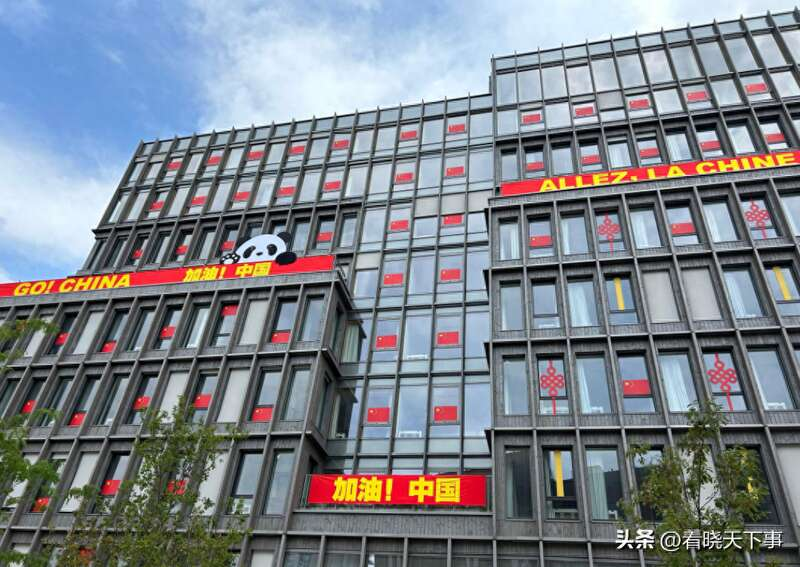
在运动员成绩方面，不需要多说，这两天铺天盖地的媒体报道已经说明一切，尤其是潘展乐的男子100米自由泳金牌和郑钦文的女子网球单打金牌，都是具有历史级别的含金量和意义
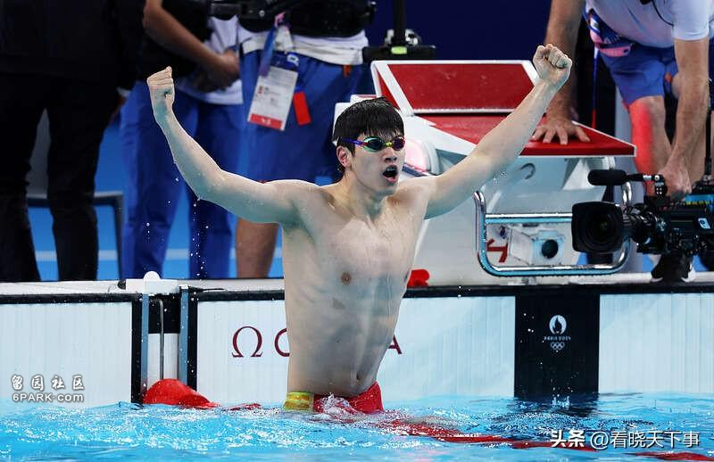
众所周知，中国游泳队在近几个月频繁接受药检，对生活和比赛都带来很大困扰，在巴黎奥运会男子100米自由泳决赛中，中国选手潘展乐以46秒40的成绩打破世界纪录，夺得金牌！
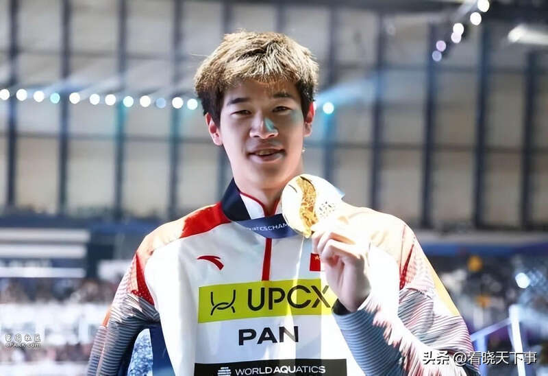
决赛中，以几乎一个身位的优势获得冠军，这在如此激烈的竞争环境下尤为难得，更是对外界各种干扰的坚定回应
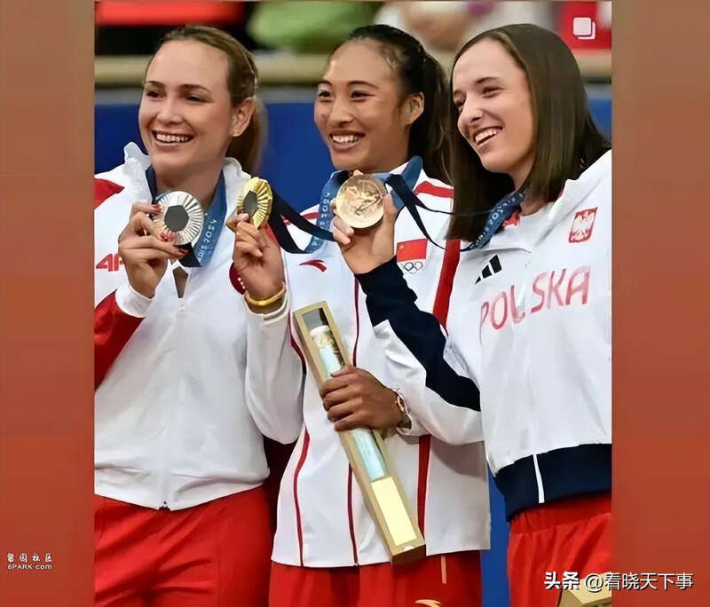
同样，郑钦文拿下的女网金牌，也是冠军含金量十足，是一个历史性的突破，毕竟网球项目在国际有着巨大影响力，强如当初的李娜，也只是打进奥运会四强
可以说这枚奖牌并非一块简单的金属，它更是中国网球迈向国际主流舞台的标志，这枚奖牌背后蕴含着无数小时的汗水和拼搏
赛场外同样充满中国制造除了赛场内的辉煌，赛场外同样充满中国制造的光芒。在开幕式上，中国的高科技设备如无人机编队和全息投影技术大放异彩，不仅增添了科技感，也展示了中国在科技创新方面的领先地位
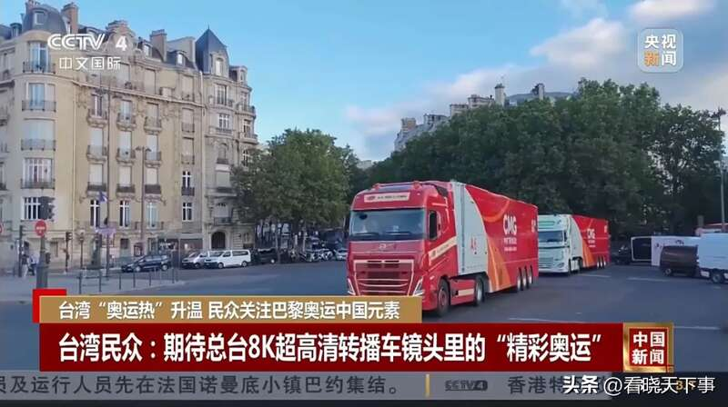
巴黎奥运会的转播技术也是由中国科技企业阿里云担纲。巴黎奥运会大量采用中国AI技术，通义大模型支撑赛事解说、直播等多个环节，阿里云也成为奥运首个AI大模型应用的技术提供方
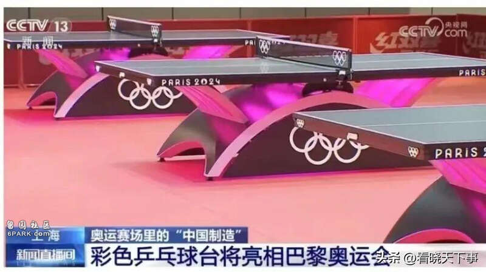
甚至运动员们比赛的场馆和各类设备，如太阳能发电系统、雨水回收系统以及低能耗照明设备，都是由中国企业提供的，无一不体现了中国制造业的创新能力和全球影响力
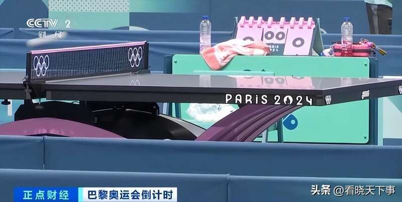
从奥运场馆的建设到各类比赛器材，从运动员的服装装备到奥运村的生活设施，“中国制造”的身影随处可见
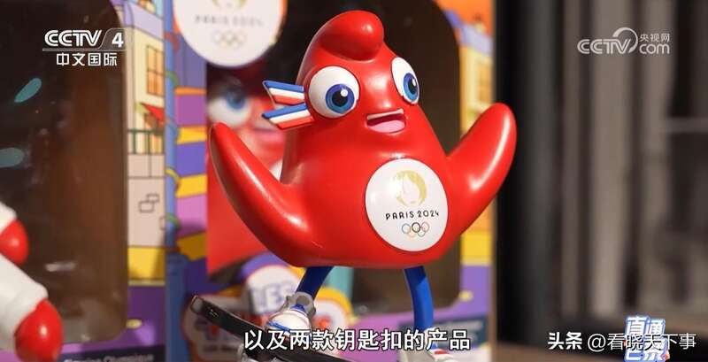
不夸张的讲，“中国制造”闪耀巴黎奥运会，体现了中国制造业的强大实力和国际影响力
韩国《中央日报》也是羡慕地刊文称，中国科技正“以一飞冲天之势迅速成长，对标尖端技术的龙头。”韩国龙仁大学教授朴盛赞则承认韩国的竞争力下降、人才流失严重，而中国坚定长期可持续的政策，加速了科技突破
当然，巴黎奥运会上所展示出来的中国科技实力仅仅只是冰山一角，近年来随着中国科技高速发展，诸多领域已经走在了世界前列！
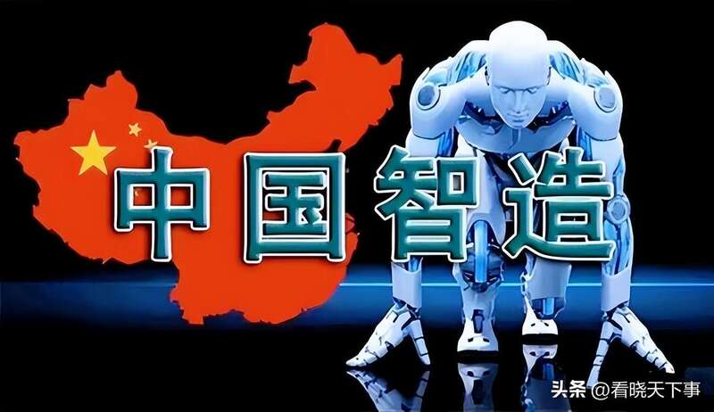
就以与我们生活息息相关的新能源汽车为例，中国在新能源汽车领域的进步也令人瞩目。从最初的起步阶段到如今拥有全球最大的新能源汽车市场，中国不仅建立了完整的产业链，还催生了一批具有国际竞争力的企业，甚至还将科技与生活完全融入到当下的车型中来
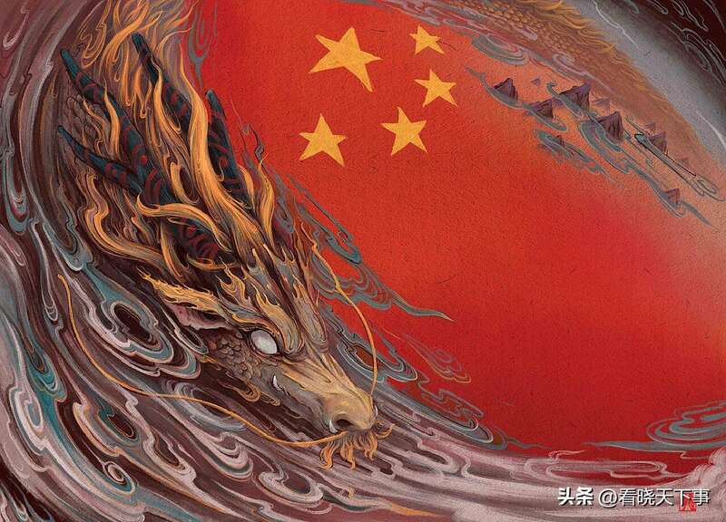
比如近年来，众多企业已深刻认识到到芯片短缺对产业进步的显著制约效应，头部车企如比亚迪、蔚来、小鹏和理想等纷纷投入自研芯片的研发，以提升智能驾驶能力和降低成本
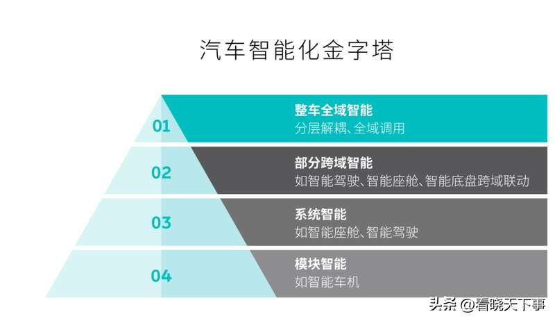
而这时，华为推出的麒麟芯片与蔚来发布的神玑NX9031芯片，就均彰显了行业在硬件自主化上的积极探索
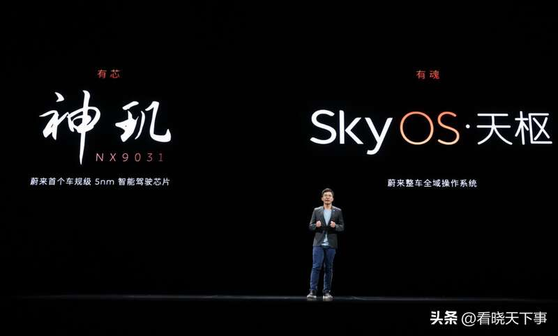
作为业界首款采用 5nm 车规工艺制造的高阶智能驾驶芯片，蔚来“神玑NX9031”芯片和底层软件均已实现自主设计，该芯片采用了32核心CPU架构，每秒能够处理超过6万亿条指令，具备超强的任务并发处理能力
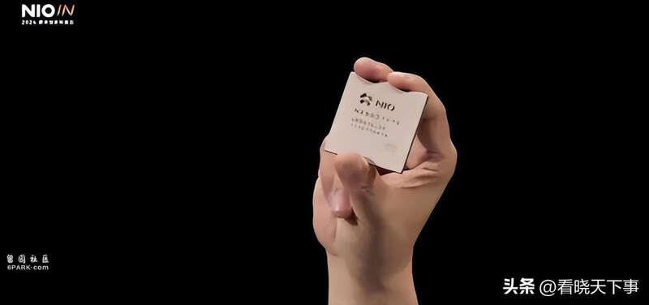
其中内置的高动态范围高性能ISP能够实现6.5G Pixel/s的像素处理能力，处理延时小于5ms，确保了在复杂环境下也能快速且清晰地处理大量图像数据，为智能驾驶提供更准确、更及时的环境感知信息
此外，蔚来在NIO IN 2024创新科技日活动上发布了全车全域操作系统SkyOS天枢，这是汽车行业首个由车企自主研发和发布的智能电动汽车全域操作系统#蔚来技术##蔚来创新科技日##蔚来SkyOS天枢#
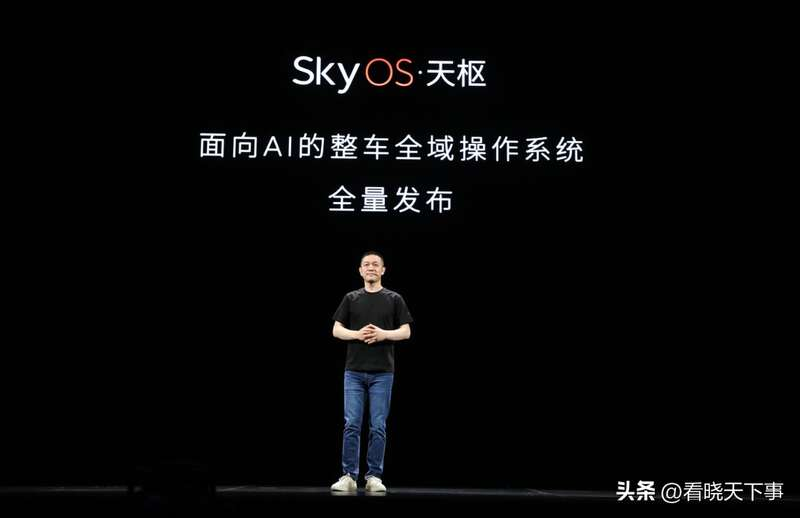
目前，操作系统从分域各自为战，到跨域融合，最终到整车全域，也成为行业发展趋势
一方面，硬件与应用的变化，推动着两者的桥梁OS全域化，即电子电气架构从分布式向中央式演进，去掉了大量MCU，硬件趋向集中化，同时软件功能开始出现同质化，造成了不必要的冗余，系统变得臃肿
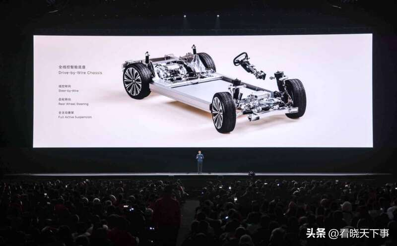
另一方面，随着智能驾驶浪潮兴起，大量先进高性能的传感器上车，使得系统整体的数据吞吐量越来越大，催生了吞吐量大、时延低的车载OS。这也在很大程度上推动了全域操作系统的研发
而SkyOS天枢的出现，面向人工智能时代，具备高带宽、低时延、大算力、异构硬件、跨域融合、灵活持续进化、高可靠性和信息安全等七大特性，实现了对车联网、车控系统、智能驾驶、数字座舱和手机应用等全域应用的统一管理和协调，为智能汽车的发展提供了新的可能性
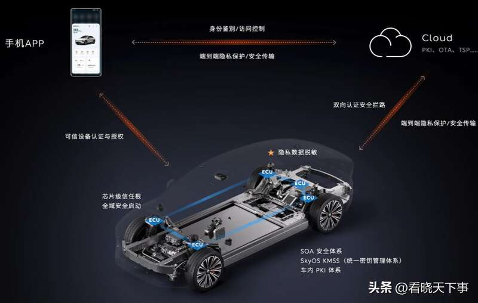
这种自主研发的整车操作系统，不仅解决了硬件和软件耦合的问题，还为未来芯片技术的发展和应用提供了新的思路。作为目前国内唯一的整车操作系统，SkyOS天枢的推出标志着中国在智能汽车领域的又一历史性突破，对中国汽车产业竞争力增强具有战略意义
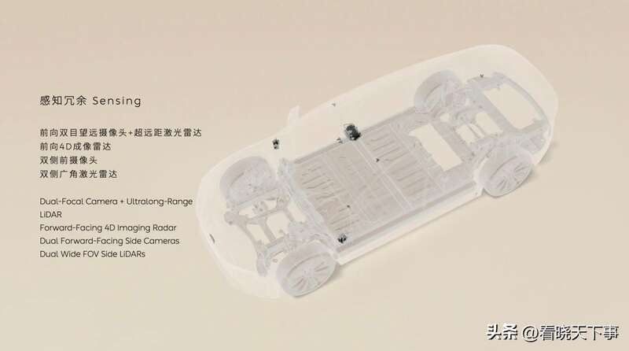
蔚来汽车推出的SkyOS·天枢操作系统，不仅是公司技术创新的成果，也是对智能汽车未来发展方向的一次积极探索。随着SkyOS·天枢的不断完善和应用，我们期待蔚来汽车能够在智能汽车领域带来更多突破和惊喜
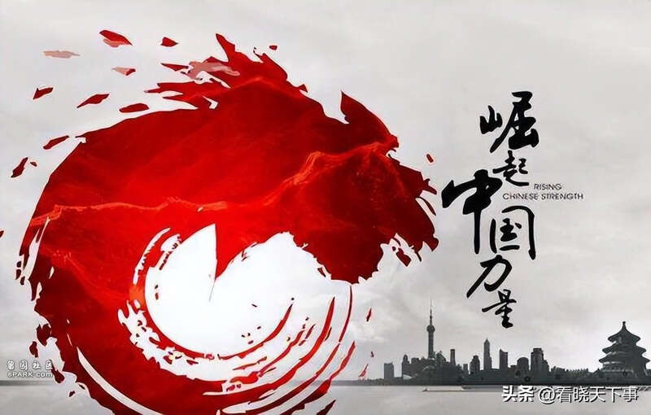
制造业是实体经济的基础，是国家经济命脉所系，无论是中国在巴黎奥运会展示的科技实力和创新能力，还是各个领域不断地研发和创新，都让我们看到了东方这条巨龙苏醒的势头，未来，随着中国在各个领域的持续发展，我们可以期待更多的突破和成就，为世界带来更多惊喜和启发！